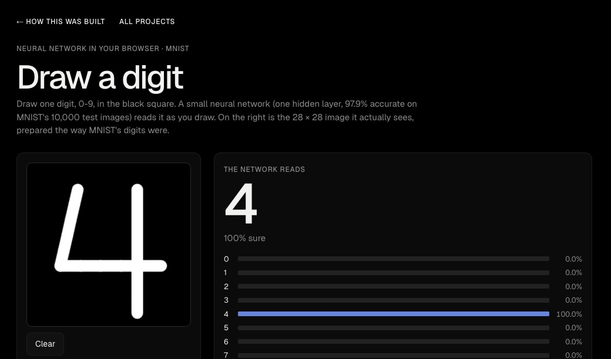
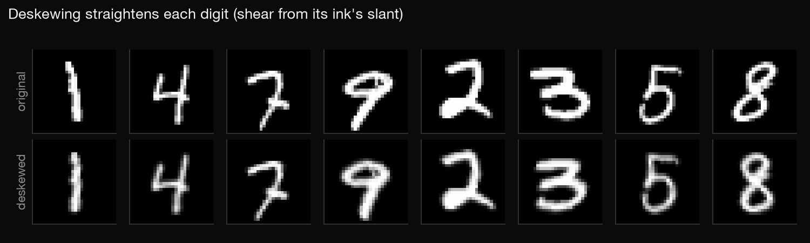
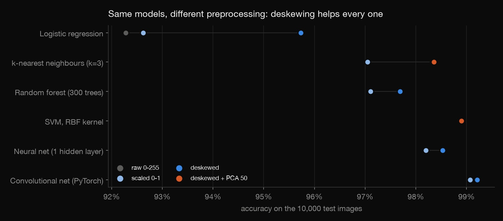
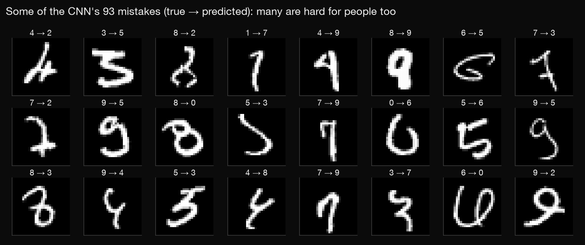

Python · Machine learning · 2026-10
Handwritten Digits
Teaching a computer to read handwritten digits, focused on preprocessing: six models from logistic regression to a CNN, four ways of preparing the images, and a page where you can draw a digit for a neural network to read.

Models use common default settings fixed in advance, not tuned. The drawing page runs the small one-layer network (97.9%), not the CNN, so it stays light enough for a web page.
01 — The problem
MNIST, 70,000 small images of handwritten digits, is the "hello world" of machine learning. Most projects jump straight to the fanciest model. How much of the accuracy actually comes from how the images are prepared, and how much from the model?
02 — What I built
A Python project on the standard split (60,000 training images, 10,000 test images, each scored once):
- Four preparations: raw pixels, scaled to 0–1, deskewed (each digit straightened), and deskewed plus PCA.
- Six models: logistic regression, k-nearest neighbours, random forest, SVM, a one-layer neural net, and a convolutional net in PyTorch.
- A noise check, an error analysis, and a draw-a-digit page.
03 — How it was built
- 01
Straighten the digits
People slant their handwriting. Deskewing measures each digit's slant from where its ink sits (its image moments) and shears it upright. That's the trick from the original MNIST benchmarks, written here in a few lines of NumPy. Average slant drops from 0.187 to 0.001 and no ink is lost.

skew = cov / var_y if var_y > 0 else 0.0 src_c = cols + skew * (rows - 14.0) + (cx - 14.0) - 02
Same models, different preparation
Thirteen runs, each trained on all 60,000 training images and scored once on the official 10,000. Deskewing raised every model, most of all the simplest: logistic regression went from 92.6% to 95.7%, because a straight-line model can't learn to un-slant a digit by itself. PCA to 50 dimensions kept k-NN at 98.4% while making it 14× faster.

- 03
Check the small gains aren't noise
For the CNN, deskewing added only 0.14 points, so is it luck? Each version was trained three times with different random seeds. Every deskewed run (99.17–99.26%) beat every plain run (99.03–99.13%). The gain is small but real.
- 04
Look at the mistakes
The CNN misreads 93 of 10,000 digits. Its most common mixes are 7 read as 2, 9 as 5, and 4 as 9. Many of them are genuinely ambiguous: a 4 with a closed top, a 9 with a tiny loop.

- 05
Put a model in the browser
The drawing page runs a one-hidden-layer network in plain JavaScript. Your drawing is prepared the way MNIST's digits were: cropped, scaled into a 20 × 20 box, and centred by its centre of mass in a 28 × 28 frame. Without that step, even a good model misreads browser drawings. Weights are stored as 16-bit integers (272 KB instead of 1.9 MB), and
check.pyproves that doesn't change a single test prediction. Tested by drawing a 1, a 7 and a 4 with the mouse in Chrome: all three read correctly.
04 — Results
| Model | Scaled | Deskewed |
|---|---|---|
| Logistic regression | 92.6% | 95.7% |
| k-nearest neighbours | 97.1% | 98.3% |
| Random forest | 97.1% | 97.7% |
| One-layer neural net | 98.2% | 98.5% |
| Convolutional net | 99.07% | 99.21% |
- Preparation beat model choice for simple models: deskewed logistic regression (95.7%) closes over half the gap to a random forest on plain pixels.
- The CNN is best (99.21%), and benefits least from hand-made preprocessing: its convolutions learn much of it.
- An SVM on deskewed + PCA features reaches 98.9% without any neural network.
05 — What I'd do next
- Data augmentation (small rotations and shifts) for the CNN, which typically reaches 99.5%+.
- Run the CNN itself in the browser (ONNX or TensorFlow.js).
- Collect mouse-drawn digits and measure how much accuracy drops compared with MNIST's pen strokes.